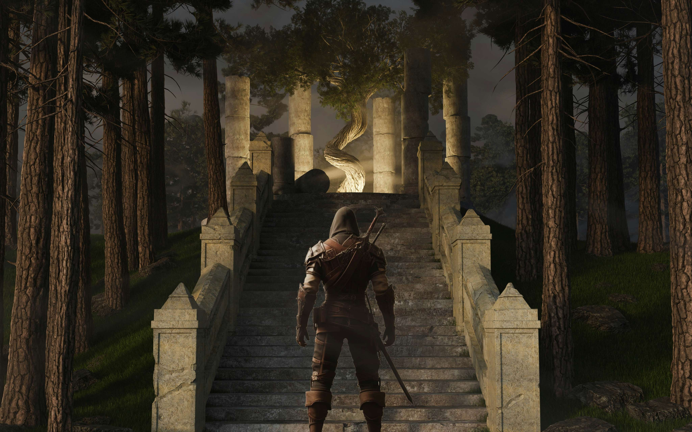
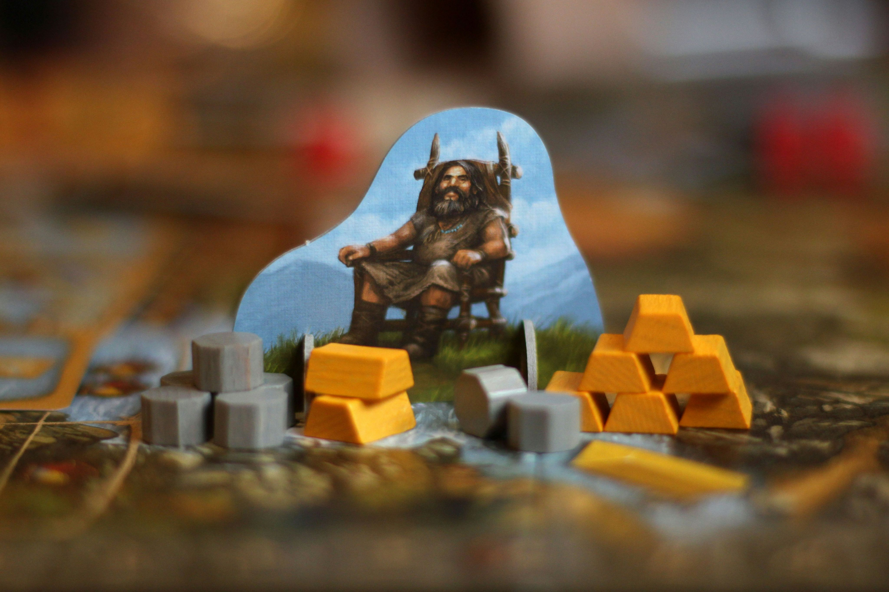

Level Up Your Game
Every gamer wants to improve—whether you’re grinding ranks, competing with friends, or just aiming for smoother gameplay. Here’s a guide packed with practical, proven tips that can help you play smarter, master new skills, and elevate your game to the next level.
🎯 Master the Basics First
Before chasing flashy moves or high-level tactics, ensure you have the fundamentals down. This includes learning game controls inside out, understanding map layouts, and memorizing common spawn points or item locations. Mastery of the basics builds confidence and consistency.
🧠 Study, Don’t Just Play
Top players don’t just log countless hours—they analyze gameplay. Watch replays to see what went wrong, follow professional streamers to pick up advanced strategies, and read patch notes to stay updated on balance changes. Being informed often makes the biggest difference.
⌨️ Customize Your Settings
Every game offers settings to tweak your sensitivity, key binds, or HUD. Experiment until you find the setup that feels most natural. The right configuration reduces fatigue, improves reaction time, and helps you stay focused longer.
⚙️ Use Mods and Tools Wisely
Mods and overlays can boost your gaming efficiency—showing cooldowns, stats, or custom skins for better visibility. At GameModsHub, we ensure that all mods are safe and comply with game policies, so you can enhance your play without risking bans.
⏱ Practice with Purpose
Quality matters more than quantity. Instead of random sessions, set small goals: improve headshot accuracy, complete challenges faster, or learn a new skill move. Tracking your progress keeps you motivated and shows measurable results over time.
👥 Play with Better Players
Nothing sharpens your skills like playing against or alongside stronger players. It forces you to adapt quickly, observe new techniques, and build resilience. Don’t shy away from tough matches—they’re often the best teachers.
🛌 Rest and Recharge
Good reflexes and strategic thinking require rest. Avoid long sessions without breaks; fatigue can dull reaction times and decision-making. Sleep, hydration, and even short walks between games help maintain focus and performance.
Improvement isn’t instant, but with dedication and the right habits, any gamer can see real progress. Remember: even pro players started as beginners. Keep practicing smart, stay curious, and let your passion guide you to the top of the leaderboard.